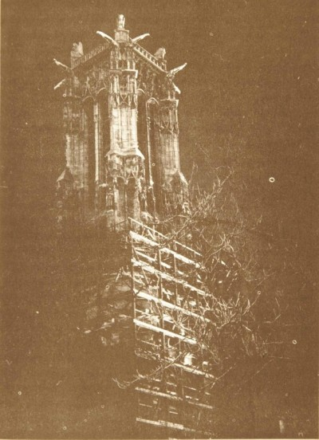

Saint-Jacques Tower
Saint-Jacques Square, 4e


This tower is all that remains of Church Saint-Jacques-de-la-Boucherie (constructed 1509-1523). Given the Surrealists’ affinity for the occult, irrationality, and symbols, their interest in alchemy is natural. André Breton and Robert Desnos in particular were fascinated by fifteenth-century alchemist Nicolas Flamel, who according to legend, was given a code revealing the secrets of transmutation by a man named Abraham. Desnos, who grew up in the area, wrote the article “The Mystery of Abraham the Jew.” The Surrealists would study the tower for alchemical signs.
Photo credit: Guide du Paris Surréaliste

Hôtel de Ville